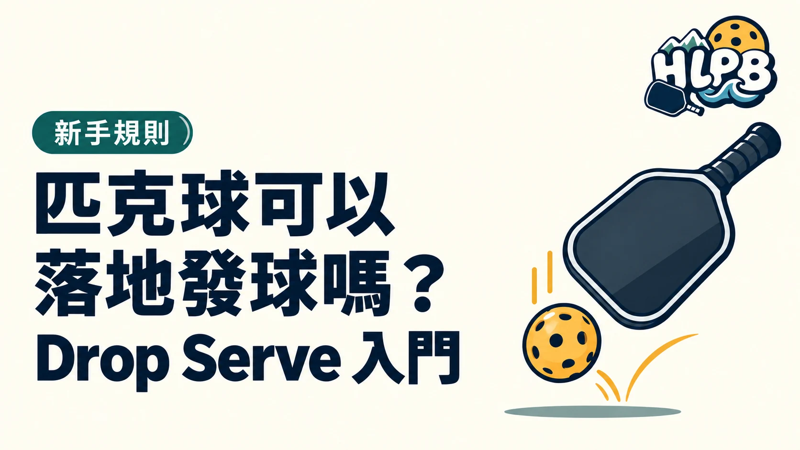

落地發球是先讓球自然落地，再用球拍擊出。它與空中發球的差別，首先在於擊球前有沒有落地，而不是球發得高不高、快不快。
放球與擊球，要分開看
放球時讓重力使球落下，不應往下壓、往上拋或施力推送來製造彈跳。球落地後再揮拍。先確認放球動作，再看回球方向，會比一開始同時追求速度和旋轉更容易檢查。
| 檢查項目 | 要確認什麼 |
|---|---|
| 球的釋放 | 自然落下，沒有額外推送 |
| 擊球時機 | 球先接觸地面，再用球拍擊出 |
| 發球站位 | 仍要符合發球站位規定 |
| 發球落點 | 仍須進入正確的斜對角發球區 |
不受部分空中發球動作限制，不等於沒有規定
落地發球不套用空中發球的向上揮拍、擊球高度與拍頭位置等動作條件；但發球站位及落點要求沒有因此取消。不能只確認球有彈過，就認為這次發球一定有效。
先練哪個環節？
HLPB 建議把練習分成釋放、等球、擊球、觀察落點四個環節。先讓每次放球位置容易控制，再調整擊球方向。若落點不穩，先記錄是沒有過網、太短或超出發球區，不要立即把問題歸因於球拍價格或材質。
落地發球一定比較好嗎？
選擇發球方式時，可以看自己是否容易重複動作、能否辨認失誤原因，以及是否符合規則。本文不把某一種方式寫成所有人都更容易成功，也不把落地發球當成只能給新手使用的方式。
資料來源：USA Pickleball 官方資料。規則整理依 2026 年版本；學習方法由 HLPB 編輯整理。
最後查證：2026-10-20｜資料來源：USA Pickleball 規則摘要
返回文章列表